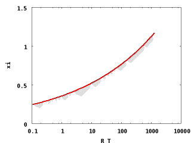
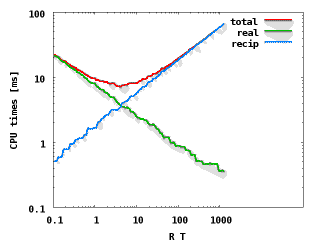
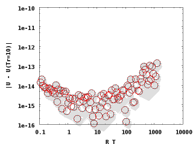

RYUON| manual| stokes| libstokes libiter| twobody
e-mail: kichiki@users.sourceforge.net Copyright (C) 2006 Kengo Ichiki. All rights reserved.
xi3 in RYUON-stokes package is a tuning program for ewald summation parameter $\xi$.
Here is a sample procedure of how to use xi3 in practice. We are looking at the problem of 8 particles at SC lattice sites in (5, 5, 5) periodic box. A sample configuration file (xi3.scm)is given in the package:
; sample set file for xi3 ; SC lattice config of 8 particles in (5,5,5) box ; $Id: xi3.scm,v 1.2 2006/10/23 17:18:11 kichiki Exp $ (define version "F") ; version. "F", "FT", or "FTS" (define flag-mat #t) ; #t => matrix scheme, #f => atimes scheme (define flag-notbl #f) ; #t => no-table, #f => with table (define np 8) ; number of particles (define ewald-eps 1.0e-12) ; cut-off limit for Ewald summation ; lattice vector (define lattice '(5.0 5.0 5.0)) ; configuration of particles (define x #( 0.0 0.0 0.0 2.5 0.0 0.0 0.0 2.5 0.0 0.0 0.0 2.5 0.0 2.5 2.5 2.5 0.0 2.5 2.5 2.5 0.0 2.5 2.5 2.5 )) ; list of time ratio Tr/Tk for Ewald summation (optional) ;(define ewald-trs ; '(0.1 ; 1.0 ; 10.0 ; 100.0 ; ))
In xi3 program as well as libstokes library, another parameter $R_T$ instead of $\xi$ is used. $R_T$ is a rough estimation of time ratio for real and reciprocal summations and related to $\xi$ as
$ R_T = \frac{ \left( l_x l_y l_z \xi^3 \right)^2 }{\pi^3} = \frac{T_{real}}{T_{recip}} , $where
$ T_{real} \propto l_x l_y l_z \xi^3 , \quad T_{recip} \propto k_x k_y k_z = \frac{\pi^3}{l_x l_y l_z \xi^3} . $Next figure shows $\xi$ vs. $R_T$:
Note that this is implemented in the routine xi_by_tratio ().
Changing $R_T$, the number of lattice points in real and reciprocal summations are changing: The former is decreasing and the latter increasing as $R_T$ is increasing. Because the calculation result is independent of $\xi$ and therefore $R_T$, we can use this parameter to tune the calculation of the Ewald summation. That is, we can take a specific value of $\xi$ which minimize the calculation cost. This is the whole purpose of xi3 program. Next figure shows CPU times for real and reciprocal spaces and the total.
As we see, there is an obvious minimum point on the total CPU time. In this example (for SC lattice of N=8 particles in (5, 5, 5) periodic box), the minimum is around $R_T\approx 4$.
Previously, I wrote that the calculation result is independent of $\xi$ and therefore $R_T$. This is the mathematical conclusion and therefore this is a good check for the code:
The results should be the same for various $\xi$ (and therefore $R_T$).Actually, we truncate the lattice summations at the point where the term is small enough. The criteria is given by another parameter ewald_eps. In this example, we take ewald_eps = 1.0e-12. (Small enough, isn't it?) In the code of xi3, we calculate not physical problems but the plain $\mathbf{A}\cdot\mathbf{x}$ calculation (cf. A-times forms) for the mobility matrix $\mathbf{A}$ and a vector $\mathbf{x} = (1,1,\cdots,1)^\dagger$. The 6th column of the result xi3 generates is the average of $\mathbf{A}\cdot\mathbf{x}$, that is, a kind of averaged velocity. ("a kind of" means that the average is taken element-wise rather than particle-wise.) Next figure shows the calculated results versus $R_T$.
The values in y-axis is the absolute value of the difference to a point at $R_T \approx 10$, which I just pick to see the fluctuations, in other words, the empirical error. (You should note that if everything is working good, this approach works, but otherwise it is not.) It looks OK. Actually, my cut-off criteria with ewald_eps might be a liitle hard (because the error is less than 1.0e-13, one order lower than expected). But it does not harm and I leave it.
$ ./xi3 --help
USAGE
./xi3 init-file
where init-file is a SCM file (default: xi3.scm)
Parameters in the init-file:
version : "F", "FT", or "FTS"
flag-mat : #t for matrix-scheme
: #f for atimes-scheme
flag-notbl : calculation scheme for the ewald-summation
: #t for no-table
: #f for with table
lattice : dimensions of the periodic box (list or vector of length 3)
ewald-eps : tolerance value for ewald-summation cut-off
np : number of particles
x : particle configuration (list or vector with length 3*np)
ewald-trs : (optional) list of ewald_tr parameters
: (list or vector with any length)